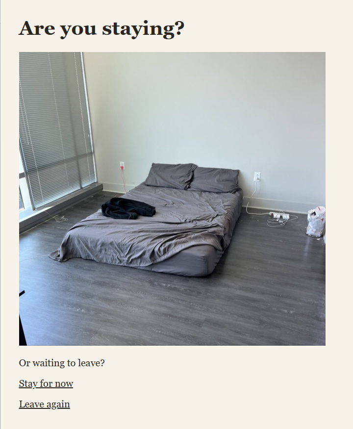

By Elizabet Gubert
You Can't Take Everything is an interactive artwork about leaving, emotional attachment, and the limits of what we can carry. Through a series of linked pages, the viewer chooses what to pack, what to leave behind, and when to leave. Everyday objects become part of a story about uncertainty and the search for home.
The story unfolds through clicking. Some links move the viewer forward, while others offer a chance to reconsider a choice or pack again. These repeated paths reflect how leaving can involve hesitation, and how arriving somewhere new does not always mean feeling at home.
